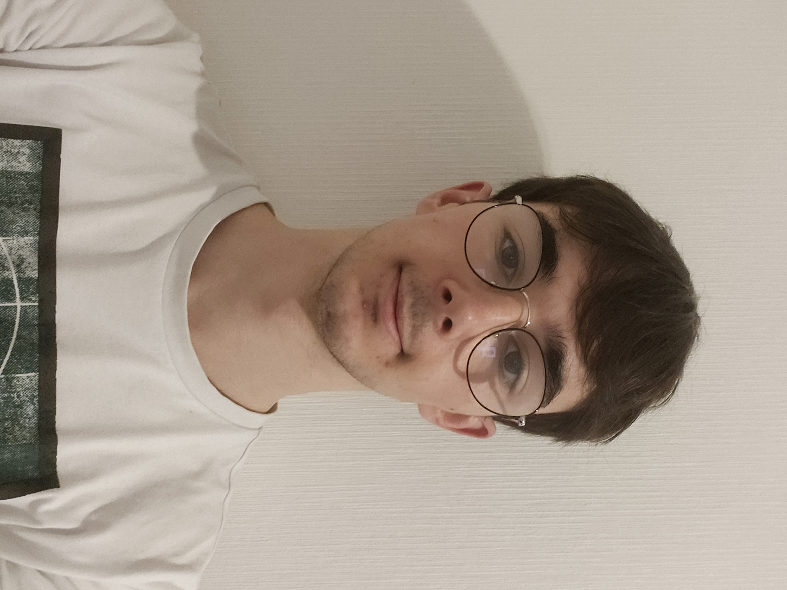

Bonjour, je suis Thomas Alves je suis en 2eme année de BUT informatique à Aubière et j’ai 19 ans.
Je suis quelqu’un de bienveillant et énergique, capable de donner mon maximum dans l’accomplissement de mes objectifs.
Grâce au BUT, j’acquiert diverses compétences en programmation mobile, web, en réseau ainsi qu’en base de données.
Je suis actuellement à la recherche d’une alternance à compter de septembre 2026, qui me permettra de développer mes compétences.